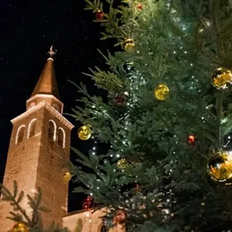

da sab 5 dic a mer 6 gen
Nadal de l'Isola
Durante le festività Grado diventa una destinazione da vivere, tra passeggiate nel centro storico, luci, presepi, appuntamenti per tutta la famiglia e iniziative che animano l’isola per tutto il periodo. Nadal de l’Isola propone un calendario di eventi che unisce tradizione…
 Indicazioni
Indicazioni
- Costi e prenotazioni
- Costo non indicato · Prenotazione non indicata
- Programma
- Programma da verificare. Apri la fonte ufficiale per orari e possibili aggiornamenti.
- In caso di maltempo
- Nessuna indicazione specifica pubblicata.
- Note
- Acquisito automaticamente dalla fonte.
L’EVENTO
Descrizione completa
È in programma a Grado la terza edizione di Nadal de l'Isola dal 5 dicembre 2026 al 6 gennaio 2027 , il calendario di iniziative che accompagnerà il periodo delle festività con appuntamenti dedicati alla tradizione, alla cultura, all'intrattenimento e alla scoperta dell'Isola del Sole nella sua veste più suggestiva. Tra gli appuntamenti previsti non mancheranno alcune delle iniziative più caratteristiche del Natale gradese. La tradizionale Rassegna dei Presepi a Grado accompagnerà le festività con un percorso diffuso in diversi luoghi della città , dove sarà possibile ammirare presepi e rappresentazioni della Natività, insieme alle esposizioni allestite al Palazzo dei Congressi . Un appuntamento che valorizza la creatività, la passione e la tradizione di chi, ogni anno, contribuisce a rendere Grado ancora più suggestiva durante il periodo natalizio. Particolarmente atteso sarà il Grande Presepe lagunare in Campo Patriarca Elia , la spettacolare opera che, dopo essere stata ammirata in piazza San Pietro a Roma e a Gorizia , porterà nuovamente nel cuore di Grado il paesaggio lagunare e la Natività ambientata tra casoni, acqua e batele. Ad arricchire l'atmosfera delle festività sarà anche il mercatino di Natale , che quest'anno si presenterà con nuove casette personalizzate in stile marinaresco , pensate per richiamare il carattere e l'identità di Grado. Un luogo dove passeggiare, curiosare tra proposte e idee regalo e lasciarsi avvolgere dall'atmosfera del Natale. Per i più piccoli e per tutta la famiglia è previsto inoltre il Luna Park , che accompagnerà le festività con giostre e divertimento, aggiungendo un'ulteriore occasione di svago al programma natalizio. Tra gli appuntamenti della tradizione è prevista anche la Marcia del Panettone , in programma a Santo Stefano : un momento di sport, convivialità e festa per trascorrere insieme la giornata dopo il Natale, in un'atmosfera allegra e informale. A chiudere le festività sarà poi, il 5 gennaio , l'appuntamento con “Arrivano le Varvuole” , le affascinanti e misteriose streghe del mare della tradizione gradese . Figure leggendarie legate all'immaginario della laguna, le Varvuole tornano ad animare l'isola con il loro sbarco al Porto Mandracchio e il successivo corteo, trasformando la vigilia dell'Epifania in un momento di magia, folklore e spettacolo. Accanto a questi appuntamenti, Nadal de l'Isola prevede inoltre nuove proposte, musica, animazione, spettacoli e occasioni di intrattenimento per grandi e piccini, con tante novità pensate per rendere ancora più piacevole e coinvolgente il periodo natalizio a Grado. Un invito a vivere l'Isola del Sole durante le festività, tra tradizioni che si rinnovano, nuove esperienze e l'atmosfera speciale del Natale gradese . Per info: cultura@comunegrado.it
Il programma completo, con date, orari, luoghi e dettagli delle singole iniziative, sarà pubblicato e aggiornato prossimamente. Il calendario di Nadal de l'Isola è attualmente in fase di definizione e sarà soggetto alle necessarie approvazioni. Le iniziative riportate sono pertanto da considerarsi indicative e potranno subire variazioni, integrazioni o modifiche.
IL PROGRAMMA
Programma e orari
Appuntamenti raccolti dalle fonti elencate. Dove manca un orario, non è ancora disponibile in questa scheda.
Programma pubblicato
- Dal 2026-12-05 al 2027-01-06
INFORMAZIONI UTILI
Prima di partire
- Controllare la fonte prima di partire.
ORGANIZZAZIONE